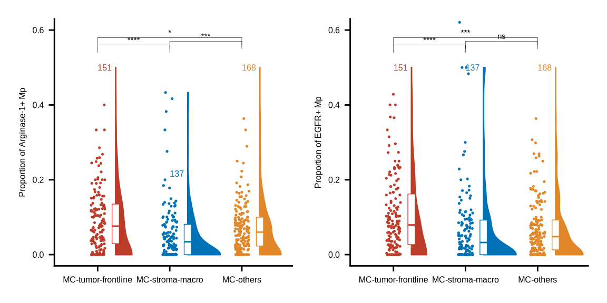
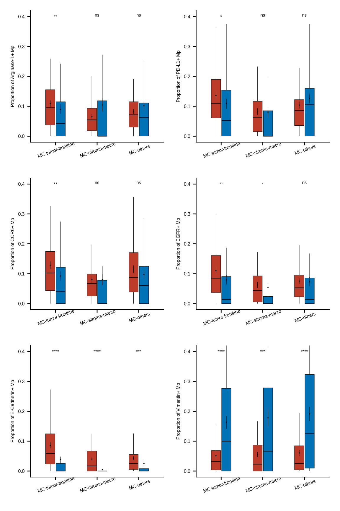
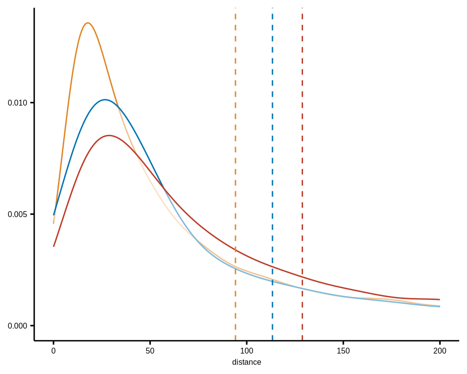
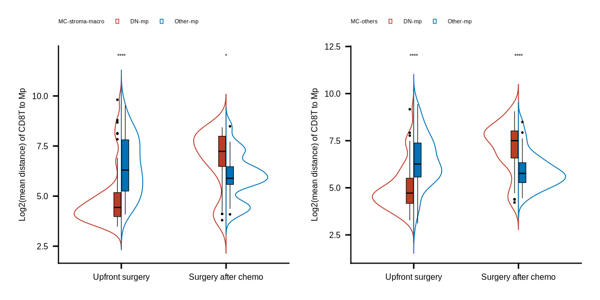
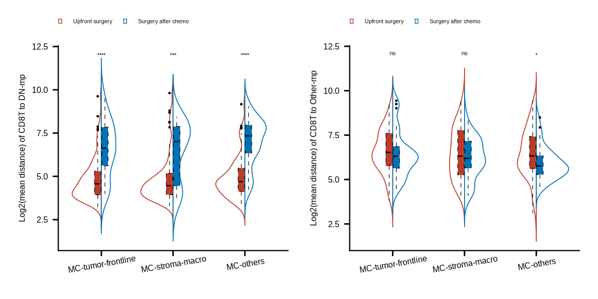

pkgs <- c("fs", "futile.logger", "configr", "stringr", "ggpubr", "ggthemes",
"vroom", "jhtools", "glue", "openxlsx", "ggsci", "patchwork", "cowplot",
"tidyverse", "dplyr", "SingleCellExperiment", "survminer", "survival")
suppressMessages(conflicted::conflict_scout())
for (pkg in pkgs){
suppressPackageStartupMessages(library(pkg, character.only = T))
}
res_dir <- "./results/sup_figure10" %>% checkdir
dat_dir <- "./data" %>% checkdir
config_dir <- "./config" %>% checkdir
#colors config
config_fn <- glue::glue("{config_dir}/configs.yaml")
ctype10_cols <- jhtools::show_me_the_colors(config_fn, "cell_type_new")
meta_cols <- jhtools::show_me_the_colors(config_fn, "meta_color")
meta_merge_cols <- jhtools::show_me_the_colors(config_fn, "meta_merge")
#read in coldata
coldat <- readr::read_csv(glue::glue("{dat_dir}/sce_coldata.csv"))
sinfo <- readr::read_csv(glue::glue("{dat_dir}/metadata_sinfo.csv"))
sample_chemo_type_list <- readr::read_rds(glue::glue("{dat_dir}/sample_chemo_type_list.rds"))
metadata <- readr::read_rds(glue::glue("{dat_dir}/metadata.rds"))
pos_cells10 <- readr::read_rds(glue::glue("{dat_dir}/pos_cell_list_10percent.rds"))sup_figure10
sup_figure10a
coldat <- coldat %>%
dplyr::mutate(meta_merge = case_when(meta_cluster %notin%
c("MC-tumor-frontline", "MC-stroma-macro", "MC-tumor-core") ~ "MC-others",
TRUE ~ meta_cluster))
my_comparisons <- list(c("MC-stroma-macro", "MC-tumor-frontline"), c("MC-stroma-macro", "MC-others"), c("MC-tumor-frontline", "MC-others"))
#a
Macrophage_Dn_total <- coldat %>% dplyr::filter(cell_type_new == "HLA-DR-CD163- mp") %>%
dplyr::filter(sample_id %in% sample_chemo_type_list$no_chemo_all) %>%
group_by(sample_id, meta_merge) %>% summarise(nt = n()) %>% ungroup()
pl <- list()
for (i in c("Arginase_1_pos_Macrophage", "EGFR_pos_Macrophage")) {
Macrophage_Dn_pos <- coldat %>% dplyr::filter(cell_type_new == "HLA-DR-CD163- mp") %>%
dplyr::filter(sample_id %in% sample_chemo_type_list$no_chemo_all) %>%
dplyr::filter(cell_id %in% pos_cells10[[i]]) %>%
group_by(sample_id, meta_merge) %>% summarise(np = n()) %>% ungroup()
Macrophage_Dn_pos <- left_join(Macrophage_Dn_total, Macrophage_Dn_pos, by = c("sample_id", "meta_merge")) %>%
replace_na(list(np = 0)) %>% dplyr::mutate(prop = np/nt) %>%
ungroup() %>% dplyr::select(-c(nt, np)) %>%
dplyr::filter(meta_merge != "MC-tumor-core") %>%
group_by(meta_merge) %>% dplyr::mutate(gn = n()) %>% ungroup
Macrophage_Dn_pos$meta_merge <- factor(Macrophage_Dn_pos$meta_merge, levels = c("MC-tumor-frontline", "MC-stroma-macro", "MC-others"))
yname <- str_replace_all(i, c("_pos_" = "+ ", "Macrophage" = "Mp", "_" = "-"))
pl[[i]] <- ggplot(Macrophage_Dn_pos, aes(x = meta_merge, y = prop, fill = meta_merge, color = meta_merge)) +
introdataviz::geom_flat_violin(aes(color = meta_merge), position = position_nudge(x = .25), bounds = c(0, 0.5)) +
geom_jitter(aes(color = meta_merge), width = 0.1, size = 0.25) +
geom_boxplot(width = .1, position = position_nudge(x = .25), fill = "white", linewidth = 0.25, outlier.shape = NA) +
scale_fill_manual(values = meta_merge_cols) + scale_color_manual(values = meta_merge_cols) +
scale_y_continuous(limits=c(0, 0.6), oob = scales::rescale_none) +
stat_compare_means(aes(label = "p.signif"), hide.ns = F, tip.length = 0.02, bracket.size = 0.1,
comparisons = my_comparisons, method = "wilcox.test",
size = 2, label.y = c(0.51,0.52,0.53)) +
directlabels::geom_dl(aes(label = gn),
method = list("last.points", cex = .5)) +
ylab(glue::glue("Proportion of {yname}")) + theme_bmbdc() +
theme(axis.title.y = element_text(size = 6),
axis.text.y = element_text(size = 6),
axis.title.x = element_blank(),
axis.text.x = element_text(size = 6),
legend.position = "none")
ggsave(glue::glue("{res_dir}/sfig10a_{i}_sample_meta3_compare_vlnplot1.pdf"), pl[[i]], width = 3, height = 3)
}
pl[["Arginase_1_pos_Macrophage"]] | pl[["EGFR_pos_Macrophage"]]
sup_figure10b
pos_mac <- c("Arginase_1_pos_Macrophage", "PD_L1_pos_Macrophage", "CCR6_pos_Macrophage",
"EGFR_pos_Macrophage", "E_Cadherin_pos_Macrophage", "Vimentin_pos_Macrophage")
coldat <- coldat %>%
dplyr::mutate(cell_type11 = case_when(cell_type_new %in%
c("HLA-DR+CD163- mp", "HLA-DR+CD163+ mp", "HLA-DR-CD163+ mp") ~ "Other-mp",
cell_type_new %in% c("HLA-DR-CD163- mp") ~ "DN-mp",
TRUE ~ cell_type_new))
cld_mac <- coldat %>% dplyr::filter(cell_type11 %in% c("DN-mp", "Other-mp")) %>%
dplyr::filter(sample_id %in% sample_chemo_type_list[["no_chemo_no_punc"]] &
meta_merge %notin% "MC-tumor-core")
mac_colors <- c("DN-mp" = "#BC3C29FF", "Other-mp" = "#0072B5FF")
pl <- list()
for (i in pos_mac) {
cld_mac_pos <- cld_mac %>%
dplyr::mutate(pos_pheno = case_when(cell_id %in% pos_cells10[[i]] ~ i,
TRUE ~ cell_type11))
pos_prop_meta <- cld_mac_pos %>% group_by(sample_id, meta_merge, cell_type11, pos_pheno) %>%
dplyr::summarise(nc = n()) %>% group_by(sample_id, meta_merge, cell_type11) %>%
dplyr::mutate(nt = sum(nc), prop = nc/nt) %>% ungroup()
pos_prop_meta$pos_pheno <- factor(pos_prop_meta$pos_pheno)
pos_prop_meta <- pos_prop_meta %>% group_by(sample_id, meta_merge, cell_type11) %>%
tidyr::complete(pos_pheno, fill = list(prop = 0)) %>%
ungroup() %>% dplyr::filter(pos_pheno %in% i) %>%
group_by(sample_id,meta_merge) %>%
dplyr::mutate(n = n(),
pos_pheno = str_replace_all(pos_pheno, c("_pos_" = "+ ", "Macrophage" = "Mp", "_" = "-"))) %>%
dplyr::filter(n == 2) %>% ungroup()
pos_prop_meta$meta_merge <- factor(pos_prop_meta$meta_merge, levels = c("MC-tumor-frontline","MC-stroma-macro","MC-others"))
pos_prop_meta$cell_type11 <- factor(pos_prop_meta$cell_type11, levels = c("DN-mp", "Other-mp"))
stat_test <- pos_prop_meta %>%
group_by(meta_merge) %>% rstatix::wilcox_test(prop ~ cell_type11, paired = T)
stat_test <- stat_test %>% mutate(p.adj.signif = case_when(p >= 0.05 ~ "ns",
p >= 0.01 & p < 0.05 ~ "*",
p >= 0.001 & p < 0.01 ~ "**",
p >= 0.0001 & p < 0.001 ~ "***",
p < 0.0001 ~ "****",
TRUE ~ "ns"))
stat_test <- stat_test %>%
rstatix::add_xy_position(x = "meta_merge", dodge = 0.9, fun = "median_iqr")
pos_prop_meta <- pos_prop_meta %>%
dplyr::mutate(prop = case_when(prop > quantile(prop, prob = .98) ~ quantile(prop, prob = .98),
TRUE ~ prop))
stat_test$y.position <- 0.4
pl[[i]] <- ggplot(pos_prop_meta,
aes(x = meta_merge, y = prop)) +
# introdataviz::geom_split_violin(aes(x = meta_merge, y = prop, fill = cell_type11),
# alpha = .6, trim = FALSE, linewidth = .2, color = "black") +
geom_boxplot(aes(fill = cell_type11), width = .5, show.legend = FALSE,
outlier.shape = NA, linewidth = .2, color = "black") +
stat_summary(aes(fill = cell_type11, color = cell_type11), fun.data = "mean_se", geom = "pointrange", show.legend = F,
position = position_dodge(.5), fatten = .2, size = .2, stroke = .5, linewidth = .2, color = "black") +
scale_fill_manual(values = mac_colors) +
scale_colour_manual(values = mac_colors) +
labs(y = glue::glue("Proportion of {unique(pos_prop_meta$pos_pheno)}")) +
scale_y_continuous(limits=c(0, 0.4), oob = scales::rescale_none) +
stat_pvalue_manual(stat_test, x = "meta_merge", tip.length = 0.01, hide.ns = F, label = "p.adj.signif", size = 2) +
theme_bmbdc() +
theme(title = element_text(size = 6),
axis.ticks = element_line(colour = "black"),
axis.title.y = element_text(size = 6),
axis.text.y = element_text(size = 6, colour = "black"),
axis.title.x = element_blank(),
axis.text.x = element_text(size = 6, colour = "black", angle = 20),
axis.line.x = element_line(linewidth = 0.4),
axis.line.y = element_line(linewidth = 0.4),
legend.position="top",
legend.text = element_text(size = 4),
legend.title = element_text(size = 4),
legend.key.size = unit(0.1, 'cm'))
ggsave(glue::glue("{res_dir}/sfig10b_mac_persample_paired_{i}_mac_prop_boxplot.pdf"), pl[[i]], width = 3, height = 3)
}
(pl[["Arginase_1_pos_Macrophage"]] | pl[["PD_L1_pos_Macrophage"]])/
(pl[["CCR6_pos_Macrophage"]] | pl[["EGFR_pos_Macrophage"]])/
(pl[["E_Cadherin_pos_Macrophage"]] | pl[["Vimentin_pos_Macrophage"]])
sup_figure10c
# CD8T to Macrophage_other ----------------------------
df_closecell_distance_SM <- readr::read_rds(glue::glue("{dat_dir}/distance_rds/SM_list_closecell_dist_k1_CD8T_to_Macrophage_oth.rds")) %>%
do.call("rbind", .) %>% as_tibble() %>% dplyr::mutate(meta_merge = "MC-stroma-macro")
df_closecell_distance_TB <- readr::read_rds(glue::glue("{dat_dir}/distance_rds/TB_list_closecell_dist_k1_CD8T_to_Macrophage_oth.rds")) %>%
do.call("rbind", .) %>% as_tibble() %>% dplyr::mutate(meta_merge = "MC-tumor-frontline")
df_closecell_distance_othersnoBT <- readr::read_rds(glue::glue("{dat_dir}/distance_rds/OthersnoBT_list_closecell_dist_k1_CD8T_to_Macrophage_oth.rds")) %>% do.call("rbind", .) %>% as_tibble() %>% dplyr::mutate(meta_merge = "MC-others")
df_closecell_distance <- rbind(df_closecell_distance_SM, df_closecell_distance_TB, df_closecell_distance_othersnoBT) %>% as_tibble()
df_dist_meta3 <- df_closecell_distance %>%
dplyr::filter(from_cell %in% (coldat %>% dplyr::filter(sample_id %in% sample_chemo_type_list$no_chemo_all) %>% .$cell_id))
p <- ggdensity(df_dist_meta3, x = "distance",
add = "mean",
color = "meta_merge",
palette = meta_merge_cols) +
scale_x_continuous(limits=c(0,200), oob = scales::rescale_none) +
theme(axis.title.y = element_blank(),
axis.text.y = element_text(size = 6),
axis.title.x = element_text(size = 6),
axis.text.x = element_text(size = 6),
legend.position = "none")
ggsave(glue::glue("{res_dir}/sup_figure10c_CD8T_dist_to_OthMac_3metas_density.pdf"), p, width = 3.5, height = 2.9)
p
sup_figure10d
mac_colors <- c("DN-mp" = "#BC3C29FF", "Other-mp" = "#0072B5FF")
meta_names <- c("TB_" = "MC-tumor-frontline", "SM_" = "MC-stroma-macro", "OthersnoBT_" = "MC-others")
pl <- list()
for (r in c("SM_", "OthersnoBT_")) {
df_dnmac <- readr::read_rds(glue::glue("{dat_dir}/distance_rds/{r}list_closecell_dist_k1_CD8T_to_Macrophage_DN.rds")) %>%
do.call("rbind", .) %>% as_tibble()
df_othmac <- readr::read_rds(glue::glue("{dat_dir}/distance_rds/{r}list_closecell_dist_k1_CD8T_to_Macrophage_oth.rds")) %>%
do.call("rbind", .) %>% as_tibble()
df_mac <- rbind(df_dnmac, df_othmac) %>% as_tibble()
df_mac <- df_mac %>%
inner_join(coldat, by = c("to_cell" = "cell_id")) %>%
dplyr::filter(sample_id %in% c(sample_chemo_type_list[["chemo"]],
sample_chemo_type_list[["no_chemo_no_punc"]])) %>%
dplyr::mutate(chemo = case_when(sample_id %in% sample_chemo_type_list[["chemo"]] ~ "Surgery after chemo",
TRUE ~ "Upfront surgery"))
#sample
df_mac_mean <- df_mac %>% group_by(sample_id, cell_type11, chemo) %>%
dplyr::summarise(mean_dis = mean(distance)) %>%
group_by(sample_id, chemo) %>% dplyr::mutate(nc = n()) %>%
ungroup() %>% dplyr::filter(nc > 1)
df_mac_mean$cell_type11 <- factor(df_mac_mean$cell_type11, levels = c("DN-mp", "Other-mp"))
df_mac_mean$chemo <- factor(df_mac_mean$chemo, levels = c("Upfront surgery", "Surgery after chemo"))
stat_test <- df_mac_mean %>%
group_by(chemo) %>% rstatix::wilcox_test(mean_dis ~ cell_type11, paired = T)
stat_test <- stat_test %>% mutate(p.adj.signif = case_when(p >= 0.05 ~ "ns",
p >= 0.01 & p < 0.05 ~ "*",
p >= 0.001 & p < 0.01 ~ "**",
p >= 0.0001 & p < 0.001 ~ "***",
p < 0.0001 ~ "****",
TRUE ~ "ns"))
stat_test <- stat_test %>%
rstatix::add_xy_position(x = "chemo", dodge = 0.9, fun = "median_iqr")
stat_test$y.position <- 12
pl[[r]] <- ggplot(df_mac_mean,
aes(x = chemo, y = log2(mean_dis))) +
introdataviz::geom_split_violin(aes(x = chemo, y = log2(mean_dis), color = cell_type11),
trim = FALSE, linewidth = .3) +
geom_boxplot(aes(fill = cell_type11), width = .15, show.legend = FALSE,
outlier.size = .2, linewidth = .2, color = "black") +
scale_fill_manual(values = mac_colors, name = glue::glue("{meta_names[r]}")) +
scale_colour_manual(values = mac_colors, name = glue::glue("{meta_names[r]}")) +
labs(y = "Log2(mean distance) of CD8T to Mp") +
theme_bmbdc() +
theme(title = element_text(size = 6),
axis.ticks = element_line(colour = "black"),
axis.title.y = element_text(size = 6),
axis.text.y = element_text(size = 6, colour = "black"),
axis.title.x = element_blank(),
axis.text.x = element_text(size = 6, colour = "black"),
axis.line.x = element_line(linewidth = 0.4),
axis.line.y = element_line(linewidth = 0.4),
legend.position="top",
legend.text = element_text(size = 4),
legend.title = element_text(size = 4),
legend.key.size = unit(0.1, 'cm')) +
stat_pvalue_manual(stat_test, x = "chemo", tip.length = 0.01, hide.ns = F, label = "p.adj.signif", size = 1.5)
ggsave(glue::glue("{res_dir}/sfig10d_CD8T_to_mac_dis_{r}cacb_persam_paired.pdf"), pl[[r]], width = 3, height = 3)
}
pl[["SM_"]] | pl[["OthersnoBT_"]]
sup_figure10e
cld_cacb <- coldat %>% dplyr::filter(sample_id %in% c(sample_chemo_type_list[["chemo"]],
sample_chemo_type_list[["no_chemo_no_punc"]])) %>%
dplyr::mutate(chemo = case_when(sample_id %in% sample_chemo_type_list[["chemo"]] ~ "Surgery after chemo",
TRUE ~ "Upfront surgery")) %>%
dplyr::select(sample_id, cell_id, cell_type11, chemo, meta_merge)
#MC-tumor-frontline
list_closecell_distance_macDN <- read_rds(glue::glue("{dat_dir}/distance_rds/TB_list_closecell_dist_k1_CD8T_to_Macrophage_DN.rds"))
list_closecell_distance_macOth <- read_rds(glue::glue("{dat_dir}/distance_rds/TB_list_closecell_dist_k1_CD8T_to_Macrophage_oth.rds"))
df_closecell_distance <- do.call("rbind", c(list_closecell_distance_macDN, list_closecell_distance_macOth)) %>% as_tibble()
TB_dist <- df_closecell_distance %>%
inner_join(cld_cacb, by = c("to_cell" = "cell_id"))
#MC-stroma-macro
list_closecell_distance_macDN <- read_rds(glue::glue("{dat_dir}/distance_rds/SM_list_closecell_dist_k1_CD8T_to_Macrophage_DN.rds"))
list_closecell_distance_macOth <- read_rds(glue::glue("{dat_dir}/distance_rds/SM_list_closecell_dist_k1_CD8T_to_Macrophage_oth.rds"))
df_closecell_distance <- do.call("rbind", c(list_closecell_distance_macDN, list_closecell_distance_macOth)) %>% as_tibble()
SM_dist <- df_closecell_distance %>%
inner_join(cld_cacb, by = c("to_cell" = "cell_id"))
#MC-others
list_closecell_distance_macDN <- read_rds(glue::glue("{dat_dir}/distance_rds/OthersnoBT_list_closecell_dist_k1_CD8T_to_Macrophage_DN.rds"))
list_closecell_distance_macOth <- read_rds(glue::glue("{dat_dir}/distance_rds/OthersnoBT_list_closecell_dist_k1_CD8T_to_Macrophage_oth.rds"))
df_closecell_distance <- do.call("rbind", c(list_closecell_distance_macDN, list_closecell_distance_macOth)) %>% as_tibble()
OthenoBT_dist <- df_closecell_distance %>%
inner_join(cld_cacb, by = c("to_cell" = "cell_id"))
df_dist <- rbind(TB_dist, SM_dist, OthenoBT_dist)
#per sample
df_dist_mean <- df_dist %>% group_by(sample_id, cell_type11, chemo, meta_merge) %>%
dplyr::summarise(dis_mean = mean(distance)) %>% ungroup()
df_dist_mean$meta_merge <- factor(df_dist_mean$meta_merge, levels = c("MC-tumor-frontline", "MC-stroma-macro", "MC-others"))
df_dist_mean$chemo <- factor(df_dist_mean$chemo, levels = c("Upfront surgery", "Surgery after chemo"))
cols <- c("Upfront surgery" = "#BC3C29FF", "Surgery after chemo" = "#0072B5FF")
pl <- list()
for (i in c("DN-mp", "Other-mp")) {
dat <- df_dist_mean %>% dplyr::filter(cell_type11 %in% i)
stat_test <- dat %>%
group_by(meta_merge) %>% rstatix::wilcox_test(dis_mean ~ chemo, p.adjust.method = "none")
stat_test <- stat_test %>% mutate(p.adj.signif = case_when(p >= 0.05 ~ "ns",
p >= 0.01 & p < 0.05 ~ "*",
p >= 0.001 & p < 0.01 ~ "**",
p >= 0.0001 & p < 0.001 ~ "***",
p < 0.0001 ~ "****",
TRUE ~ "ns"))
stat_test <- stat_test %>%
rstatix::add_xy_position(x = "meta_merge", dodge = 0.9, fun = "median_iqr")
stat_test$y.position <- 12
pl[[i]] <- ggplot(dat, aes(x = meta_merge, y = log2(dis_mean))) +
introdataviz::geom_split_violin(aes(x = meta_merge, y = log2(dis_mean), color = chemo),
trim = FALSE, linewidth = .3) +
geom_boxplot(aes(fill = chemo), width = .2, show.legend = FALSE, linetype = 2,
outlier.size = .2, linewidth = .2, color = "black") +
scale_fill_manual(values = cols) +
scale_colour_manual(values = cols) +
labs(y = glue::glue("Log2(mean distance) of CD8T to {i}")) +
theme_bmbdc() +
theme(title = element_text(size = 6),
axis.ticks = element_line(colour = "black"),
axis.title.y = element_text(size = 6),
axis.text.y = element_text(size = 6, colour = "black"),
axis.title.x = element_blank(),
axis.text.x = element_text(size = 6, colour = "black", angle = 10),
axis.line.x = element_line(linewidth = 0.4),
axis.line.y = element_line(linewidth = 0.4),
legend.position="top",
legend.text = element_text(size = 4),
legend.title = element_blank(),
legend.key.size = unit(0.1, 'cm')) +
stat_pvalue_manual(stat_test, x = "meta_merge", tip.length = 0.01, hide.ns = F, label = "p.adj.signif", size = 1.5)
ggsave(glue::glue("{res_dir}/sup_figure10e_CD8T_to_{i}_dis_3metas_chemo_persam.pdf"), pl[[i]], width = 3, height = 3)
}
pl[["DN-mp"]] | pl[["Other-mp"]]